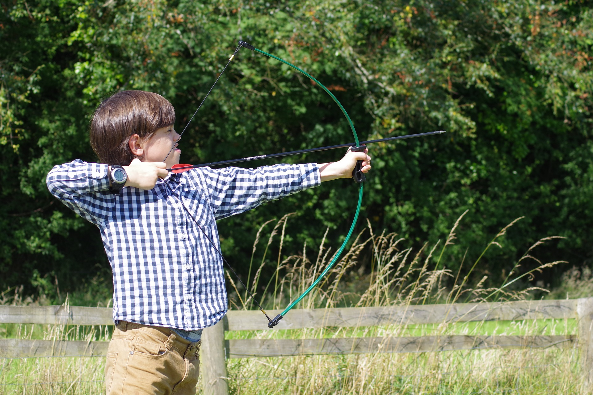

SPORTING KIDS NEWS
Sport Around The World Weekend 24th – 25th October 2018
Following our recent successful coaching weekend where 25 children, aged between 10 and 16 took part in a round the World sports event. This involved the children learning about and taking part in at least 3 different sports each day including archery, base jumping, beach tennis and parkour. A great time was had by all.
Previous Stories
We gave 834,083 young people the opportunity to participate in high quality and inclusive PE and sport.
129,553 young people were given training opportunities through the Youth Sport Trust, which included coaching, officiating and volunteering. 30% of those trained received training in inclusive practice.
34,446 members of the school workforce were given continuous professional development training by the Youth Sport Trust.